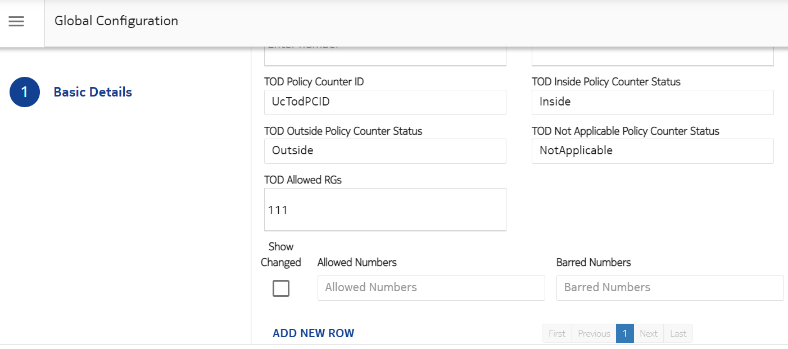
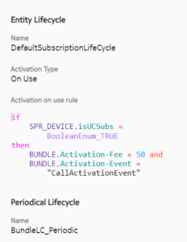

This feature allows usage and counting of data during TOD restriction using a new rating group. When a Gy/N40 transaction subscriber first comes inside TOD restriction, OCS sends an SNR or N28_Notify to the PCF using the new TOD PCID and Inside PC Status. The PCF installs a new charging rule and a new RG to track usage during TOD. CHF allocates the usage for new RG during TOD restriction until there is any other UC restriction than TOD, is applied.
When a Gy/N40 transaction for a subscriber first comes after TOD restriction period is over, CHF sends another SNR or N28_Notify to the PCF with the TOD PCID and Outside PC status, triggering the PCF to modify the rule. This feature is not applicable for re-rating/non real-time charging interface. It is applicable to 4G/5G data calls.
The status of the TOD Policy counter changes to Inside or Outside only when a Gy/N40 request enters or exits Time of Day window. For example, if a SLR/N28_Subscribe request comes inside the TOD time-frame, but Gy/N40 request is not yet received inside the TOD frame, the status for Policy Counter ID is still sent as Outside in the SLA/N28_Subscribe response.
 Note:
Note:Configuration for TOD allowed RGs, TOD PCID and status values
The TOD Allowed RGs are the rating groups for which there will be a successful grant even inside the TOD time-frame. Thus, TOD restrictions are not applied to these RGs during 4G or 5G calls but other UC restrictions will still be applied.
- TOD Inside Policy Counter Status: This is the status communicated to PCF when the last Gy/N40 call is received inside the TimeOf Day window.
- TOD Outside Policy Counter Status: This is the status communicated to PCF when the last Gy/N40 call is received outside the TimeOf Day window.
- TOD Not Applicable Policy Counter Status: This is the status communicated to PCF when the Gy/N40 call lands and there is no UC TimeOfDay configured in the subscription. Also, during a Gy/N40 call, if a Sy Session exists for the device which contains the configured TOD Policy Counter ID with Inside or Outside, but the feature flag is disabled, an SNR/N28_Notify is generated which sends the status configured in the TOD Not Applicable Policy Counter Status. It effectively cancels the status of TOD PCID at PCF, as the feature is now disabled.
If all the values are correctly configured, the current applicable TOD Policy Counter ID and its status is communicated to PCF over the Sy/N28 Interface.
To configure, log into the SM GUI, go to Charging Configuration > Global Configuration. See the sample values added in the following screen:
Rule to check if UC is subscribed
An isUCSubs rule is added to the SPR_DEVICE to validate if the UC subscription is present. It takes either True or False value. Different actions get triggered based on the rule.
SPR_DEVICE.isUCSubs=BooleanEnum_TRUE/BooleanEnum_FALSEFollowing is the rule applied to BOU bundle to validate if UC is present:
